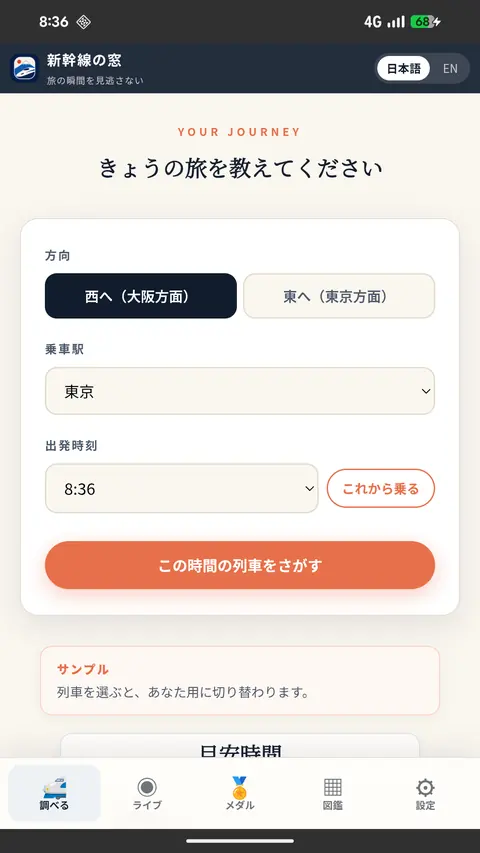
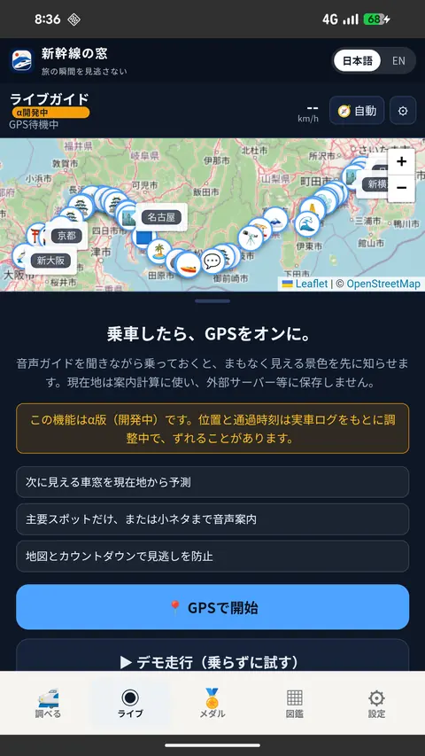
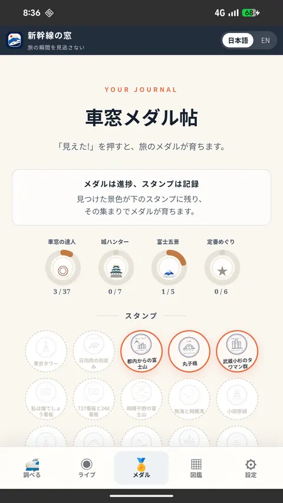

ANDROID APP
Shinkansen Window is on Google Play
Look out of the window while Shinkansen Window tells you what is coming up. Get alerts for selected views and listen to an audio guide along the Tokaido Shinkansen route, even with your screen off. The Android app is free, with no account needed.
ON YOUR RIDE
Catch the view with alerts and audio
- Alerts before your selected views. Choose your train and set alerts for the spots you want to see. The app uses your location to let you know when they are approaching.
- Hear the stories behind the scenery. Start the audio guide to play recorded commentary as you approach window spots. Recordings are in English and Japanese. Please use earphones on the train.
- Keep listening with your screen off. Once you start alerts or the audio guide in the app, guidance can continue with the screen off. Stop guidance when your ride ends.
SCREENS
Inside the app



Screens are from the version available when this page was updated and are shown in Japanese; the app also has an English mode.
GET THE APP
Get ready before you ride
Install from Google Play
Open Google Play on your Android phone and install the app. It is free and requires no account registration.
View Shinkansen Window on Google PlayChoose your train and views
Use Train Search to select your train. Set alerts for the spots you want to see, or open Audio Guide to start commentary during your ride.
Allow location and notifications
Follow the prompts to allow precise location and notifications, and turn on your phone's location service. Start alerts or the audio guide before turning your screen off.
WHY THE APP
How it differs from the web version
- One tap from your home screen. It does not get buried in browser tabs or history, so it is there right before you board.
- Explore and remember your ride. Move between train search, the field guide and your Window Stamp journal in one app.
- Core guidance and recordings are stored on your phone. Window spot data and audio recordings are included in the app. Detailed articles, full-size photos, maps and some other features need an internet connection.
- Spend more time looking outside. Use alerts and audio to follow the scenery without keeping your screen open.
NOTES
Before you start
- You need an Android phone with Google Play. There is no iPhone version at the moment.
- The app is free and does not require account registration.
- The interface supports Japanese, English, Traditional Chinese, French, German, Spanish, Simplified Chinese and Korean. Recorded audio is in Japanese and English; all non-Japanese interfaces use English audio.
- Guidance may be delayed or interrupted when GPS is unavailable, such as in tunnels, or by your phone's battery-saving settings.
- Location data is used only to calculate guidance and is not stored on external servers. See the privacy policy for details.
- The web version also stays free to use.
CONTACT
Support and feedback
This is an independently run project, so replies may take time. Including your device and what happened will help us investigate.